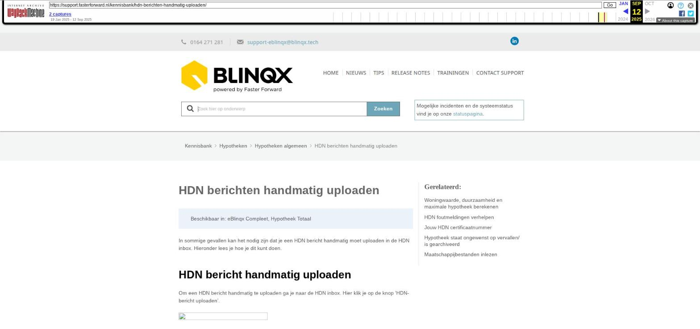

HDN berichten handmatig uploaden

Tekstinhoud
HDN berichten handmatig uploaden
Beschikbaar in: eBlinqx Compleet, Hypotheek Totaal
In sommige gevallen kan het nodig zijn dat je een HDN bericht handmatig moet uploaden in de HDN inbox. Hieronder lees je hoe je dit kunt doen.
HDN bericht handmatig uploaden
Om een HDN bericht handmatig te uploaden ga je naar de HDN inbox. Hier klik je op de knop 'HDN-bericht uploaden'.
Vervolgens kies je welke berichttype je wilt uploaden in het systeem. Het aantal HDN-berichttypes wat je kunt uploaden hangt af van of je wel of niet een beheerder bent.
Afhankelijk van het type bericht wat je hebt gekozen komen er velden beschikbaar. Er zijn optionele velden, deze zijn niet verplicht om te vullen. De gekleurde velden zijn wel verplicht om in te vullen.
De maatschappijen die getoond worden bij het veld 'Ontvangercode' zijn de maatschappijen die bij HDN bekend zijn. Deze staan los van de maatschappijen die in jouw omgeving staan ingericht.
Bij het veld 'Bestand' dien je het daadwerkelijke HDN bericht/bestand te uploaden.
Na het uploaden van het bestand en het vullen van de velden kan je opslaan. Het bericht komt in de HDN inbox te staan. Het kan zijn dat je deze nog verder moet aanvullen, dit kan je zien aan het oranje mapje voor het bericht.
Gegevens inzien
Als je het bericht wat je handmatig wilt uploaden al eerder in eBlinqx hebt ontvangen dan kan je vanuit eBlinqx verschillende gegevens, bijvoorbeeld het dossieruuid of versienummer, inzien. Dit via het logfile-icoon.
Dit logfile-icoon vind je terug in de HDN inbox achter het betreffende bericht en in het klantdossier – betreffend product – tabblad HDN. Om het logfile-icoon te kunnen zien heb je wel de juiste rechten nodig.
Door te klikken op het logfile-icoon krijg je een pop-upscherm te zien. Wanneer je klikt op 'aanvullende informatie' krijg je de gegevens te zien.
Laatste update: 27 mei 2024
Was deze informatie nuttig?
Ja Nee